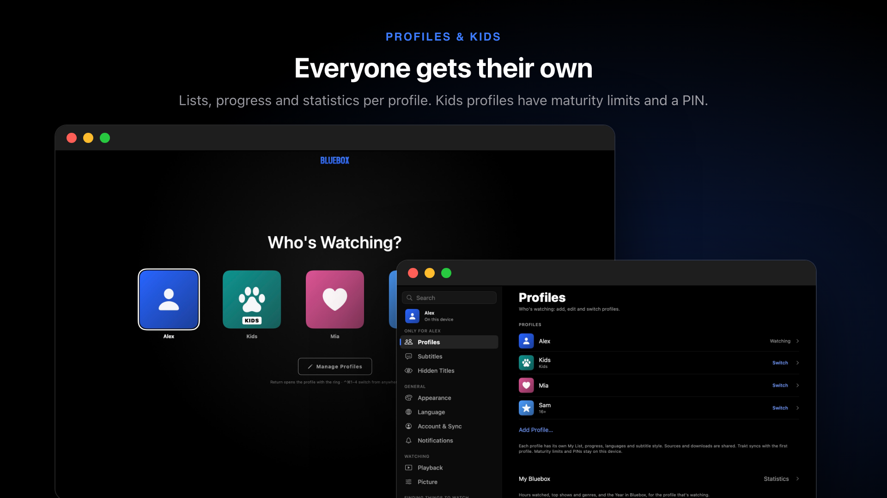
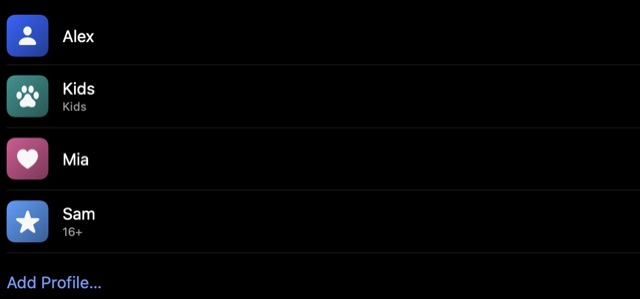
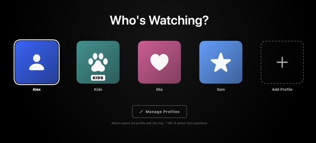

Profiles & Kids
Everyone gets their own lists and progress. Set age limits for children and lock profiles with a PIN.

Profiles#

Open Settings › Profiles and choose Add Profile….- Pick a name, picture and colour.

Switch with the profile button at the top. On the Mac, ⌃⌘1–⌃⌘5.
Each profile has its own My List, progress, languages, subtitle style and more. Sources, downloads and device settings are shared.
Technical details · What's whose, and removing a profile
Each profile has its own My List, watch progress and Continue Watching, languages, subtitle style, equaliser, Autoplay Next Episode, statistics and Spoiler Guard. On the Mac, the Profiles menu switches too. Removing a profile (Settings › Profiles, then the profile) deletes its My List and progress from all your devices. When you're signed in, profiles and their libraries sync to your other devices. Trakt follows the first profile.
Age limits#
Each profile has a Maturity setting (Settings › Profiles › the profile):
| Limit | Shows |
|---|---|
| All | Everything |
| 7+ | Rated for 7 and under, such as G, PG and TV-Y7 |
| 13+ | Up to PG-13. TV-14 and R are hidden. |
| 16+ | Up to TV-14 and 15. R and TV-MA are hidden. |
| 18+ | Everything rated 18 or under |
Technical details · Unrated titles
Ratings come from TMDB. Allow Unrated Titles decides whether titles with no rating play on a limited profile: on by default for an adult's limit, off for Kids profiles.
Kids profiles#
Turn on Kids Profile for a child. It shows titles rated 7+ or under, and family titles with no rating, whatever the Maturity setting says.
PIN locks#
- In Settings › Profiles, pick the profile and choose Profile Lock.
- Set a 4-digit PIN. Opening that profile now asks for it.
PINs and limits stay on each device and don't sync: set them on every device a child uses.
Technical details · How locks work
Settings is locked while a restricted profile is watching: it asks for a PIN if the profile has its own lock, or, for a Kids profile, if any grown-up profile has one. Editing your own restricted profile also asks for the PIN, so a limit can't be lifted from inside it. Only a salted hash of the PIN is kept, in the Keychain. If the Keychain can't be read, the profile counts as locked.
Forgot a PIN#
- Tap Forgot PIN? on the PIN screen.
- Confirm with Touch ID, Face ID or the device's password.
- Change or remove the lock in Settings › Profiles.
No password on the device? Open a profile you can get into and remove the lock from there.